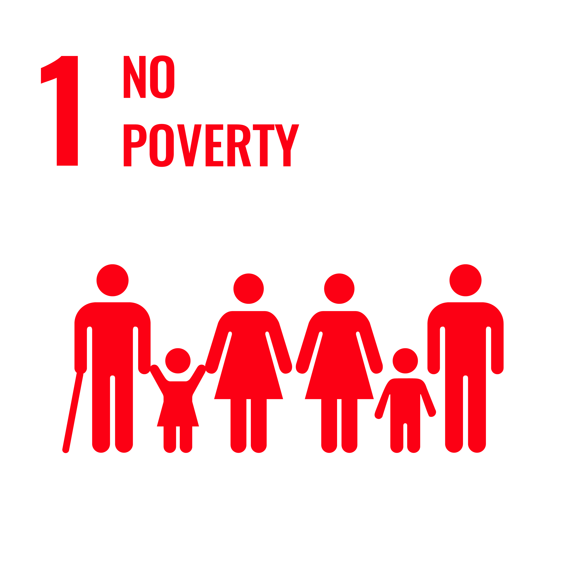
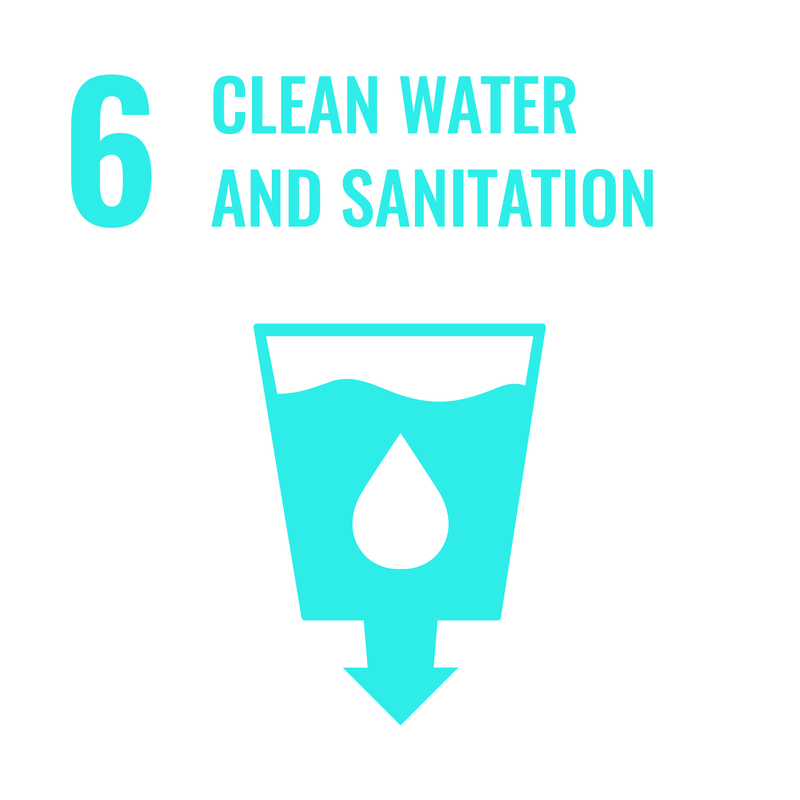
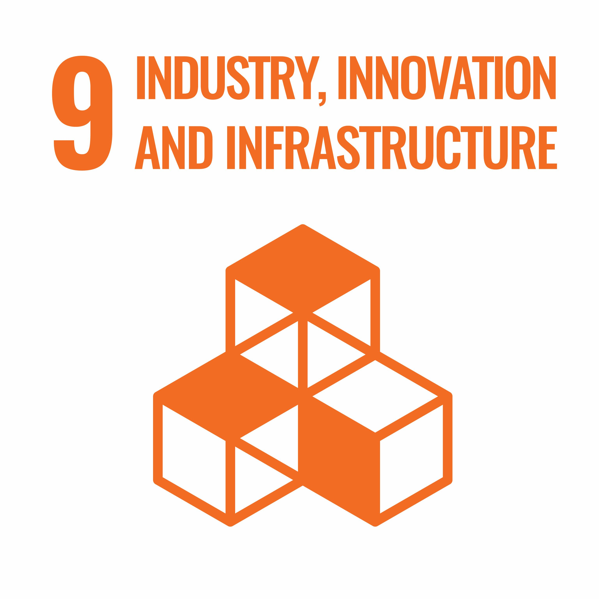
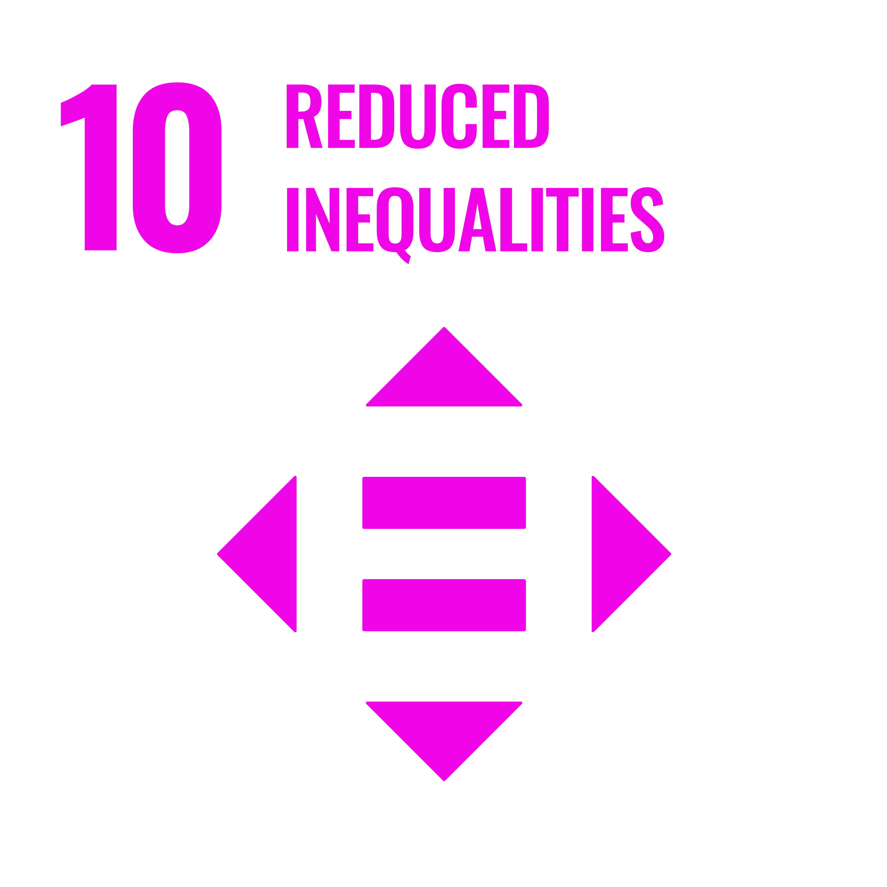
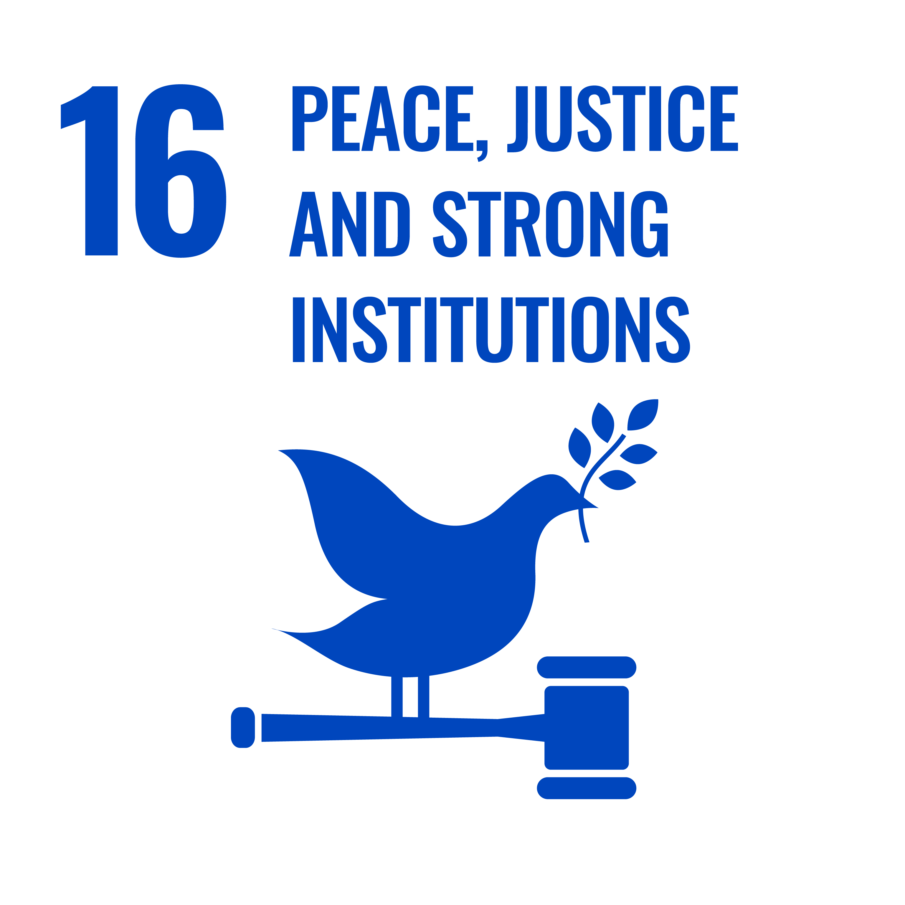

-

Someone Else's Treasure
Declutter your closet and donate items you no longer want to keep. Search for the available options on the Internet. (3 points)
-

Freez'n'Keep
Freeze your food in the freezer if you do not have an opportunity to eat it before it expires. Save food and money! (1 point)
-

Me Time
Find "me time" for yourself every day or as often as you can manage. At this time, do something that can contribute to your health and well-being: make a healthy breakfast, do sports, go for a run/walk around your place, just sitting in silence can help to reduce stress (1 Point)
-

Inspiration for Education
Read THESE inspirational stories about how young people around the world made a difference to promote education. Reflect on the stories and let your classmates know what you've learned (2 points)
-

Share Chores
Share household chores with the person you live with (Sister, Mother, Aunt, Grandmother etc...) Do them together without dividing them into "women jobs". Doing chores together promotes a sense of unity and it is also an opportunity to spend more quality time together. (2 Points)
-

Reuse your Water
Use a bowl in the sink when washing fruit, vegetables of dishes. Then use the wastewater to water your plants. (1 Point)
-

Save on Energy
Cut unnecessary use of energy in your household. Light in the empty room makes use for no one. For the whole week turn off the lights and air conditioning when you leave the room. (2 Points)
-

Follow with a Purpose
Scan and find sustainable influencers in a fair fashion, sustainable consumption, politics or human rights on Instagram, follow them and share their stories/pages to support their cause. Share your favourite ones on your story! (1 Point)
-

Share Lifts
Share a lift to destinations as much as possible. Take one point for each time. If you can walk or cycle, have 2 points! (1 Point)
-

Empathy Exercise
Spend time with someone who has a different background or life experience than you. It could be someone from a different cultural background, nationality, or someone with a disability. Listen to their story and try to understand their perspective. Reflect on what you learned and share your experience with your peers. (3 Points)
-

Public Good
Start yourself and inspire others to contribute to better public spaces - throw your own rubbish to rubbish bins and take a wrapping on the ground or forgotten Starbucks cup to the bin if you see any. If you see something is broken (swings, bench, etc.) learn where you can report so it gets fixed. It's not too much effort and as a result, we will have clean and nice public places for everyone. (2 Points)
-

Smart Declutter
If you realize you have too many clothes sell through a second-hand store or an online marketplace app, for example, Depop. (2 Points)
-

Eat for Climate Change
Try to eat at least one meat-free meal per day and find a veggie restaurant near your place and give it a try next time! (1 Point)
-

Marine Species Awareness
Research marine species native to your region and their habitats, conservation status, and ecological importance. Create informative posters or presentations highlighting key facts and threats facing these species. Share your findings with classmates, friends, or family members to raise awareness about the importance of protecting marine biodiversity. (2 points)
-

Follow the Rabbit
Buy products that are cruelty-free. Check if they have the rabbit label. (1 point)
-

Know Your Rights Quiz
Develop a "Know Your Rights" quiz for teenagers to test their knowledge of legal rights and responsibilities. This can be individual or a group challenge. Create questions covering topics such as freedom of speech, privacy rights, and juvenile justice. Share the quiz with your peers through online platforms or school events. Offer prizes or incentives for participants who score the highest and encourage friendly competition. (3 points)
-

Youth Advocacy Summit
Host a youth advocacy summit where teenagers can come together to discuss pressing issues and advocate for policy change. This can be individual or a group challenge. Invite guest speakers, policymakers, and community leaders to share insights and experiences. Organize workshops, panel discussions, and advocacy training sessions to equip participants with the knowledge and skills to effectively advocate for their priorities. Develop action plans and strategies to mobilize support and drive meaningful change. (3 points)